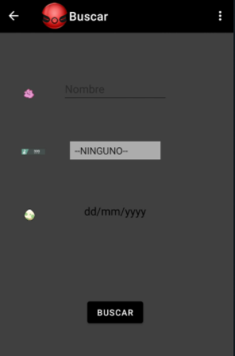

En el apartado de Buscar, tendremos tres opciones:
- Por nombre: introducimos el nombre del pokémon que queremos buscar.
- Por tipo: seleccionamos el primer tipo del pokémon a buscar.
- Por fecha: seleccionamos la fecha del pokémon.
Esto nos llevará a la pestaña de listado con el criterio que hayamos usado.
